P
AI Bookkeeping untuk Firma Akuntansi
Manual Book Praktis
Panduan penggunaan seluruh modul — dari klien baru sampai laporan & SPT
Versi 3.0 · Agustus 2026
Mencakup 24 modul: Dashboard · Command AI · Pipeline · Review & Koreksi · Buku Besar · Laporan Custom AI · Aset Tetap · Core Tax · Rekonsiliasi · SLA · Kualitas · Portal Klien · dan lainnya
Isi
Daftar Isi
- Pendahuluan & Alur Kerja
- Login & Dashboard Workspace
- Command AI (⌘K)
- Pipeline Produksi
- Antrian Review & Editor Koreksi
- Dropdown COA & Saran AI
- Jurnal Manual
- Pengecualian
- Neraca Percobaan
- Buku Besar (seluruh akun & detail)
- Laporan Keuangan
- Laporan Custom AI
- Aset Tetap & Penyusutan
- Core Tax (SPT)
- Rekonsiliasi Bank
- Monitoring SLA
- Metrik Kualitas
- Outbox Event
- Manajemen Klien
- Profil Klien & Subledger
- Knowledge Base
- Pengaturan
Pendahuluan
1 · Alur Kerja
Praktis mengotomatiskan siklus akuntansi firma: dari dokumen klien masuk, sampai laporan keuangan & SPT keluar. Junior accountant berubah dari juru ketik menjadi reviewer — AI menyusun draft, manusia yang memutuskan.
Upload — klien mengunggah dokumen (PDF/JPG/XLSX) lewat portal pribadi.
AI Pipeline — OCR lokal → deteksi event → draft jurnal (PSAK, PPN 11%) → validasi saldo → skor keyakinan.
Review 4 lapis — Junior → Senior → Tax → Partner, dengan confidence scoring.
Laporan — trial balance, laba rugi, neraca, dan SPT ter-generate otomatis.
✨ Fungsi AI ditandai warna ungu di seluruh aplikasi — badge "AI Online", tombol ✨ AI, saran deskripsi, laporan custom. Warna biru adalah aksi/brand.
Modul
2 · Login & Dashboard Workspace
Masuk dengan akun firma, lalu Anda mendarat di dashboard workspace yang bisa diatur per akuntan (dockable panels).
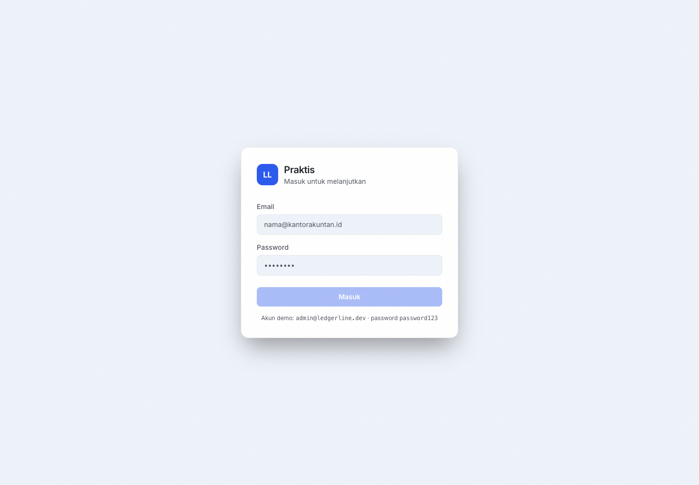
Login Praktis — akun firma akuntansi

Dashboard workspace: KPI, pipeline, SLA, kualitas — panel bisa di-drag
Masuk dengan email & password firma.
Atur panel sesuai peran (partner, senior, junior, tax officer).
Pantau KPI, pipeline, deadline pajak, dan kualitas dari satu layar.
Panel "Hari Ini" menampilkan deadline pajak & jurnal yang menunggu review.
AI Assistant
3 · Command AI (⌘K)
Tanya AI dari mana saja dalam aplikasi. AI menjawab dengan konteks data firma — klien, KPI, dan jurnal.
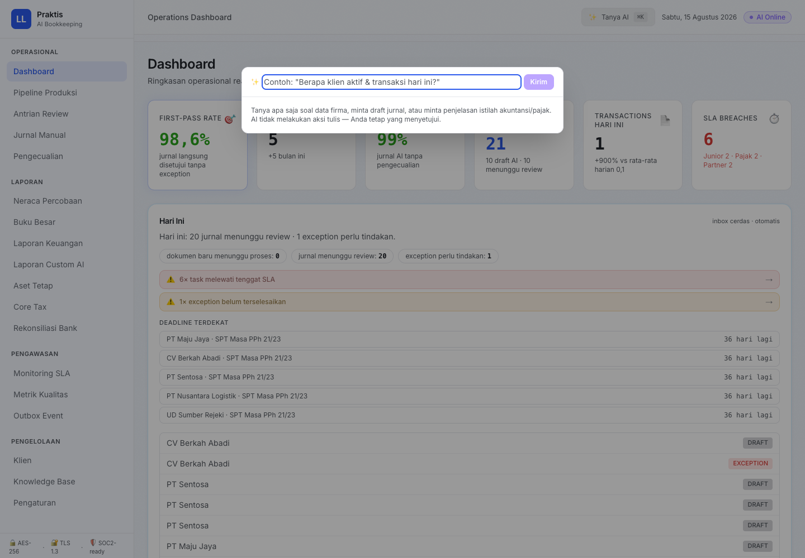
Command bar AI — tekan ⌘K atau tombol "Tanya AI"
Tekan ⌘K (atau klik "Tanya AI").
Ketik pertanyaan, mis. "berapa klien aktif bulan ini?".
AI menjawab ringkas dengan konteks data — bukan tebakan.
✨ AI mendukung intent: ask (tanya), draft (susun), explain (jelaskan), help.
Modul
4 · Pipeline Produksi
Lihat seluruh dokumen & jurnal yang sedang diproses — dari draft sampai final, dengan trace ID tiap item.
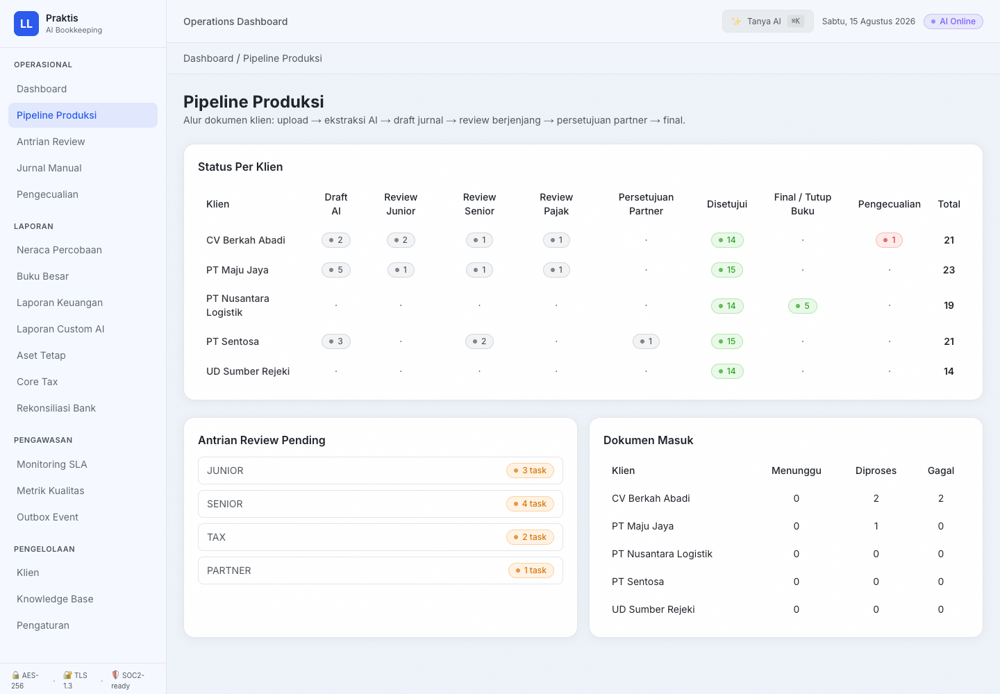
Pipeline: Draft → Review Junior → Senior → Pajak → Selesai
Filter berdasarkan tahap, klien, atau periode.
Klik item untuk membuka detail jurnal.
Pantau bottleneck di tahap mana (biasanya review senior).
Modul
5 · Antrian Review & Editor Koreksi
Antrian review menampilkan draft AI yang menunggu keputusan manusia. Saat mengoreksi, judul aksinya adalah Koreksi — dengan tiga jenis koreksi.

Antrian review dengan status & aksi setujui/kembalikan/tolak
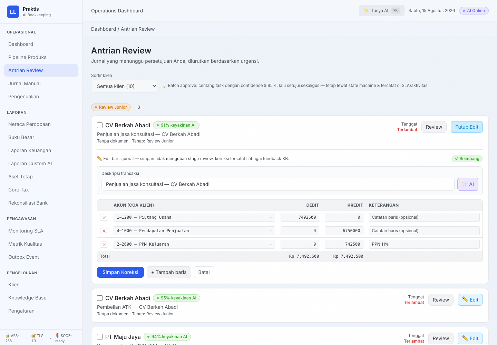
Editor koreksi — pilih jenis koreksi & sunting baris jurnal
Buka Antrian Review, klik Edit pada draft.
Pilih jenis koreksi: Penyesuaian angka · Perubahan deskripsi · Perubahan akun (reclass).
Simpan — perubahan tercatat di audit trail.
Koreksi "angka" menyesuaikan nominal, "deskripsi" mengubah keterangan, "akun" memindahkan baris ke akun lain (reclass).
AI + COA
6 · Dropdown COA & Saran AI Deskripsi
Saat mengedit jurnal, akun dipilih dari dropdown COA milik klien (bukan ketik kode bebas), dengan pencarian nama akun abjad. AI juga bisa menyusun deskripsi transaksi.
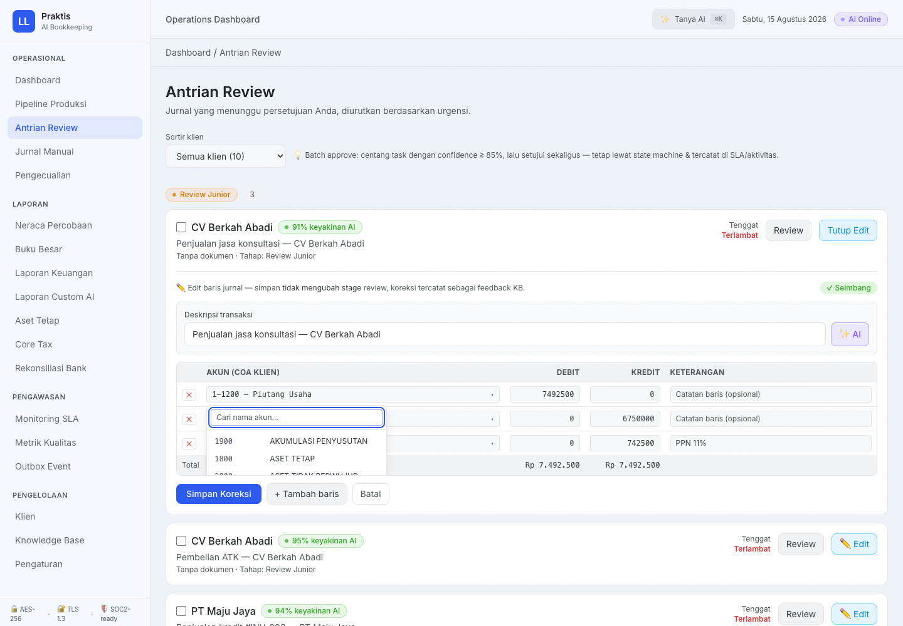
Dropdown COA — cari nama akun, terurut abjad
Klik kolom akun pada baris jurnal.
Ketik nama akun (mis. "kas") — daftar terfilter abjad.
Klik ✨ AI pada field "Deskripsi transaksi" untuk menyusun keterangan.
✨ Deskripsi AI adalah saran — selalu bisa diedit sebelum disimpan.
Modul
7 · Jurnal Manual
Untuk transaksi yang tidak masuk pipeline (adjustment, penyusutan, akrual), buat jurnal manual — saldo debit–kredit harus seimbang sebelum tersimpan.

Jurnal manual — debit & kredit harus seimbang
Pilih klien, tanggal, dan referensi.
Isi baris debit & kredit.
Simpan — sistem memvalidasi keseimbangan saldo.
Modul
8 · Pengecualian
Draft dengan keyakinan rendah atau masalah data dikumpulkan di antrian pengecualian — AI tidak pernah memaksakan keputusan.
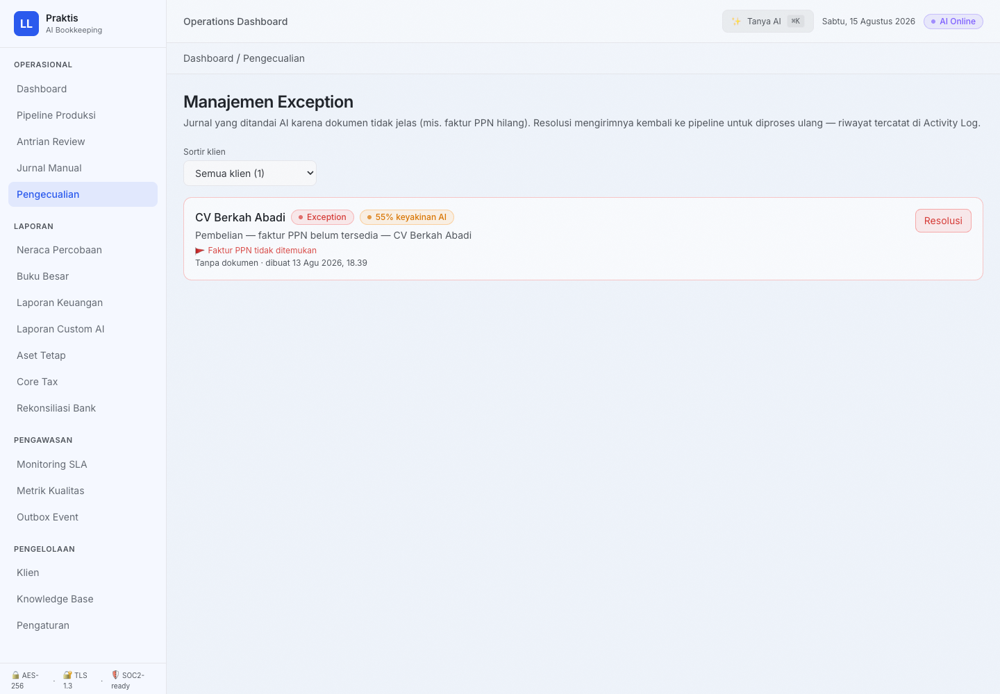
Pengecualian — flag "faktur PPN tidak ditemukan", saldo tidak seimbang, dll.
Buka antrian pengecualian.
Periksa alasan flag (confidence rendah, dokumen tidak lengkap).
Resolve: lengkapi data atau koreksi manual.
Laporan
9 · Neraca Percobaan
Ringkasan saldo debit–kredit seluruh akun per periode — dasar audit yang selalu seimbang.

Neraca percobaan — saldo debit/kredit per akun
Pilih klien & periode.
Klik kode akun untuk membuka buku besar akun tersebut.
Export CSV/XLSX bila perlu.
Laporan
10 · Buku Besar (Seluruh Akun & Detail)
Tarik seluruh akun buku besar cukup dengan memilih klien + bulan — tanpa harus berangkat dari neraca percobaan. Klik akun untuk detail running balance.
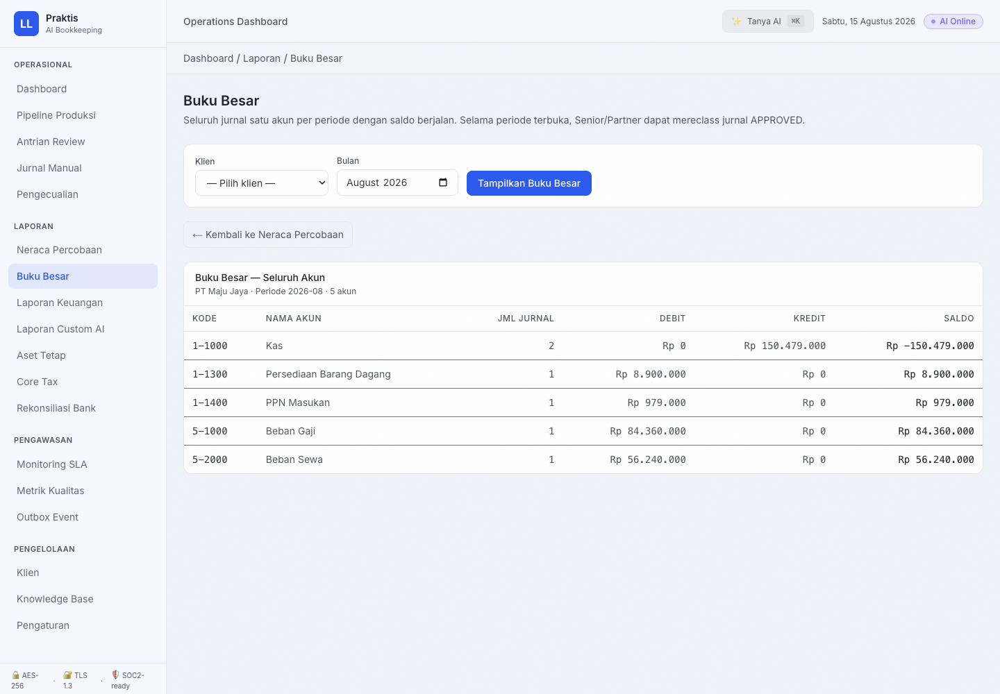
Buku besar seluruh akun — filter klien + bulan
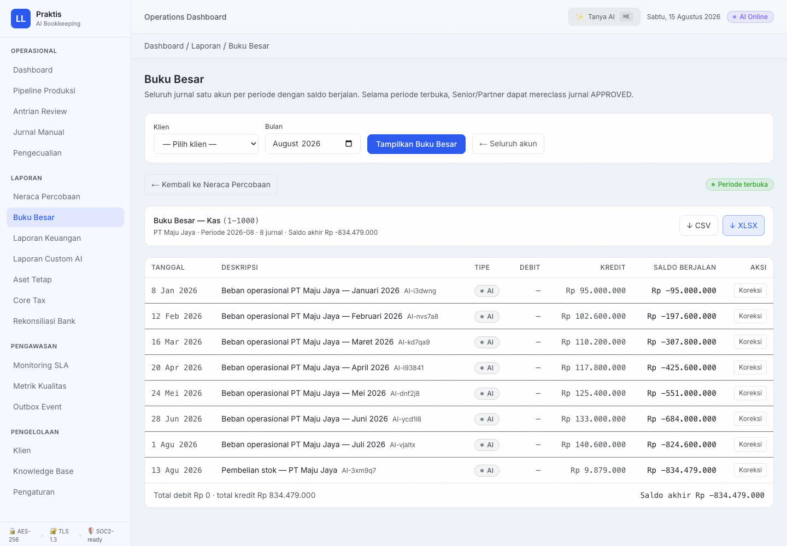
Detail akun — running balance, referensi, status
Pilih klien & bulan, klik "Tampilkan Buku Besar".
Lihat daftar semua akun (debit, kredit, saldo).
Klik kode akun untuk membuka detail transaksi.
Laporan
11 · Laporan Keuangan
Laba rugi, neraca, dan arus kas ter-generate otomatis dari jurnal APPROVED — standar SAK/PSAK.

Laba rugi & neraca — otomatis dari jurnal APPROVED
Pilih klien & periode.
Pilih jenis laporan (laba rugi / neraca / arus kas).
Export ke PDF/CSV untuk klien.
AI Assistant
12 · Laporan Custom AI
Minta laporan dengan bahasa natural — "arus kas bulanan", "penjualan per channel" — AI menyusun struktur & menghitungnya. Template tersimpan untuk dijalankan ulang tiap periode.
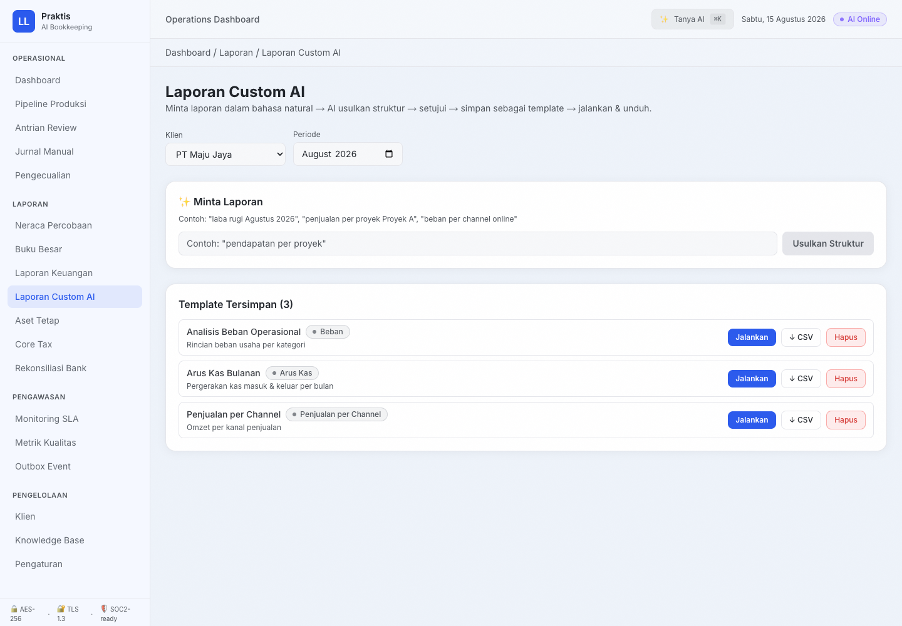
Template tersimpan — daftar laporan custom

Hasil run — angka terhitung per kategori
Ketik permintaan, mis. "analisis beban operasional".
AI mengusulkan struktur → klik Setujui & Simpan Template.
Klik Jalankan untuk menghitung data periode berjalan.
Modul
13 · Aset Tetap & Penyusutan
Register aset dengan penyusutan komersial (PSAK 216) dan fiskal (Pasal 11) dihitung paralel, plus jurnal penyusutan otomatis.
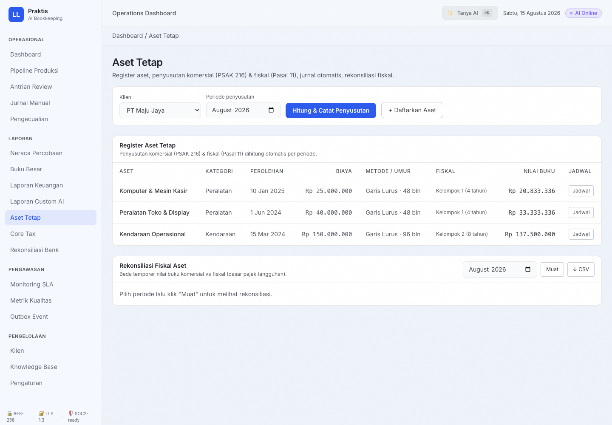
Register aset — kategori, nilai perolehan, nilai buku
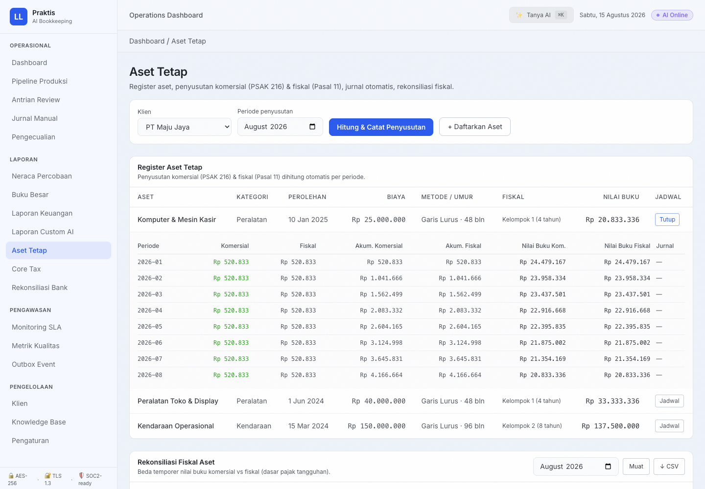
Jadwal penyusutan — bulanan, akumulasi, nilai buku
Tambah aset: nama, kategori, tanggal perolehan, nilai.
Klik Hitung & Catat Penyusutan tiap periode.
Lihat jadwal penyusutan & rekonsiliasi fiskal.
Perpajakan
14 · Core Tax (SPT)
Angka PPN, PPh 21/23, dan SPT 1771 disiapkan langsung dari jurnal APPROVED — koreksi fiskal otomatis, dilengkapi pengingat deadline.

Core Tax — PPN, PPh, SPT 1771
Pilih klien & periode pajak.
Periksa PPN & PPh terutang yang sudah dihitung.
Export CSV per lampiran untuk dilaporkan.
Deadline otomatis: PPN akhir bulan+1 · PPh 21/23 tanggal 20 · SPT Tahunan 30 April.
Modul
15 · Rekonsiliasi Bank
Cocokkan mutasi bank dengan jurnal kas — selisih ditandai untuk ditindaklanjuti, bukan diabaikan.

Rekonsiliasi — match mutasi ↔ jurnal kas
Import mutasi bank (CSV) atau input manual.
Match otomatis dengan jurnal kas berdasarkan nominal & tanggal.
Tandai selisih & selesaikan secara manual.
Operasional
16 · Monitoring SLA
Pantau tenggat layanan per klien & per tahap — dengan eskalasi otomatis saat mendekati deadline.

Monitoring SLA — tenggat per klien & tahap
Lihat status SLA seluruh klien.
Filter yang mendekati atau lewat tenggat.
Eskalasi otomatis ke penanggung jawab.
Metrik
17 · Metrik Kualitas
Ukur akurasi OCR, exception rate, dan turnaround — supaya kualitas AI terus terpantau, bukan asumsi.
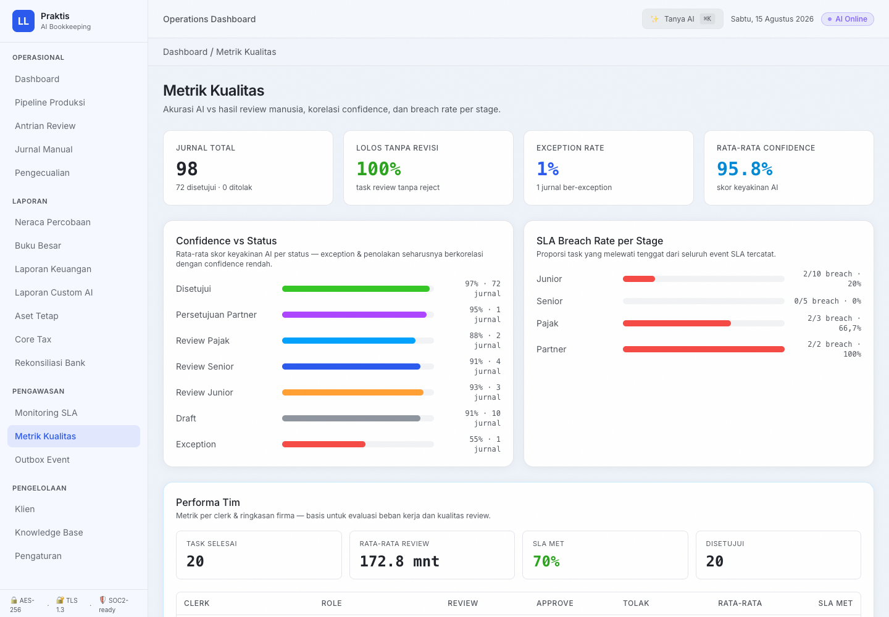
Metrik kualitas — akurasi OCR, exception, turnaround
Buka dashboard kualitas.
Pantau tren akurasi OCR & tingkat pengecualian.
Gunakan data untuk menyempurnakan rule engine.
Operasional
18 · Outbox Event
Jejak seluruh pengiriman otomatis — email, webhook, notifikasi — dengan status terkirim/retry.
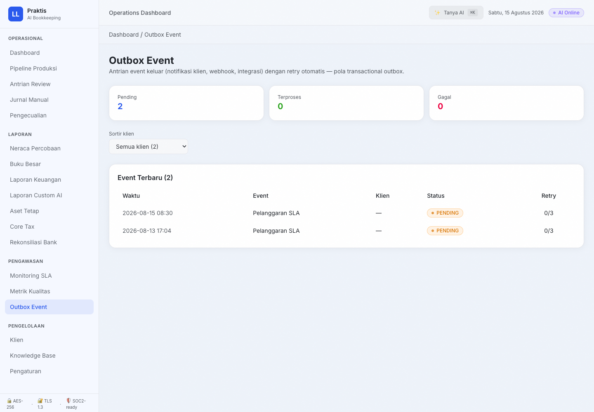
Outbox — email, webhook, notifikasi + retry
Lihat antrian outbox.
Pantau status terkirim / gagal / retry.
Kirim ulang event yang gagal.
Modul
19 · Manajemen Klien
Kelola seluruh klien firma — tambah klien baru dengan 17 template industri, lihat status, dan akses cepat ke portal.
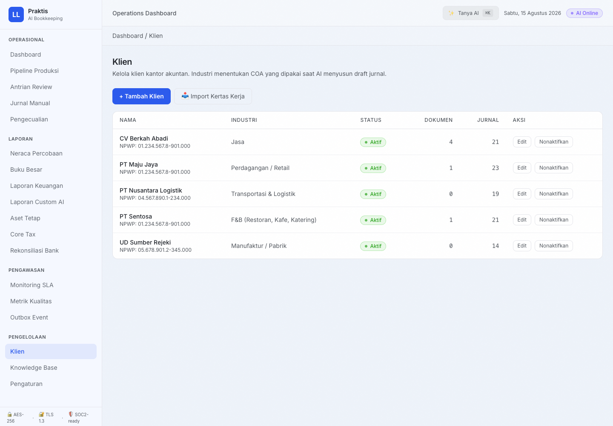
Daftar klien — industri, status, aksi
Tambah klien → pilih industri (template COA otomatis).
Lihat status tiap klien (aktif / baru / pending).
Salin link portal untuk dibagikan ke klien.
Modul
20 · Profil Klien & Subledger
Profil klien menampilkan aging piutang & subledger (buku pembantu) yang dibangun otomatis dari jurnal — konsisten dengan buku besar utama.
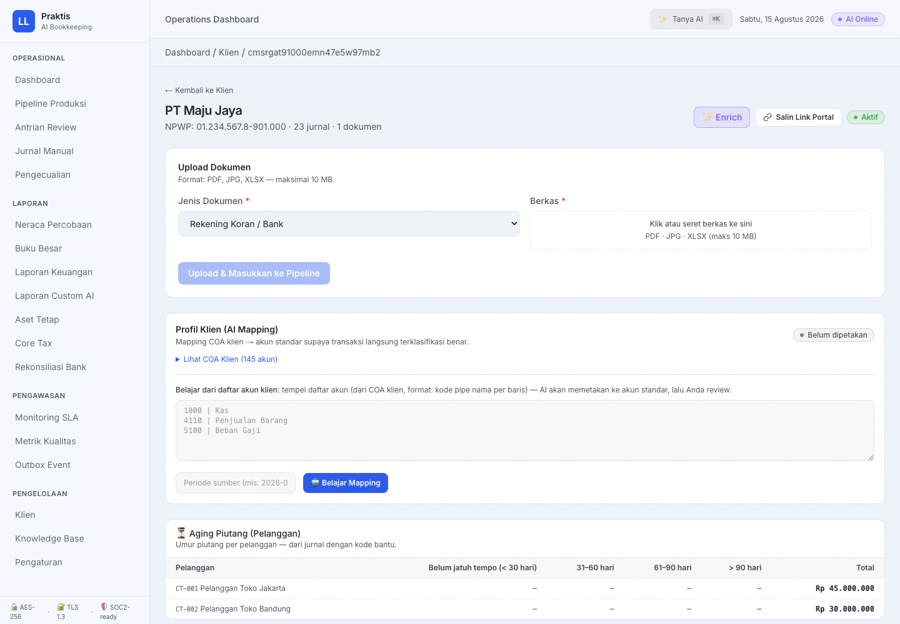
Profil klien — aging piutang & master subledger
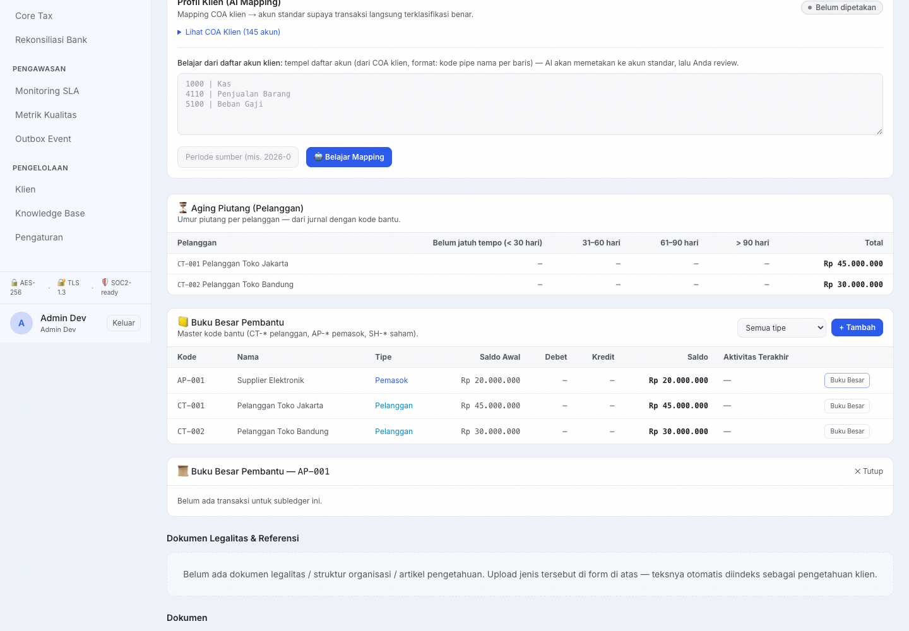
Buku besar pembantu — invoice, pembayaran, running balance
Buka profil klien → lihat aging piutang (4 bucket).
Klik Buku Besar pada kode bantu untuk detail.
Gunakan sebagai dasar konfirmasi saldo.
AI
21 · Knowledge Base
Prinsip SAK/PSAK dan aturan pajak Indonesia tersimpan sebagai acuan AI — sehingga AI punya dasar, bukan mengarang.

Knowledge base — prinsip akuntansi & pajak
Telusuri artikel pengetahuan.
Tambah atau setujui item baru.
AI merujuk knowledge base saat menyusun draft & penjelasan.
Modul
22 · Pengaturan
Konfigurasi firma — profil, peran & izin (RBAC), integrasi, dan preferensi lainnya.
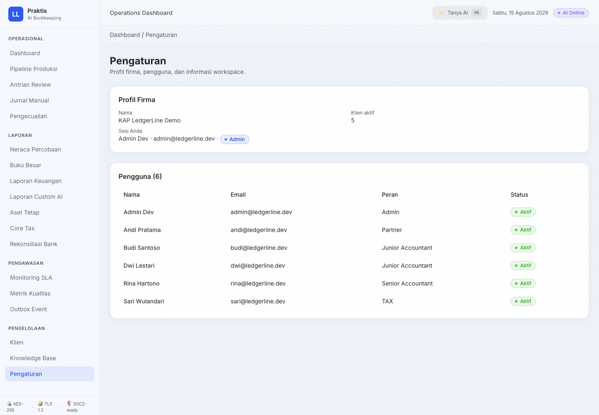
Pengaturan firma — profil, RBAC, integrasi
Atur profil firma & logo.
Kelola peran pengguna (partner, senior, junior, tax officer).
Konfigurasi integrasi & webhook.
Penutup
Ringkasan
Praktis menyatukan seluruh siklus akuntansi dalam satu platform: upload → AI draft → review 4 lapis → laporan & SPT. Dengan AI sebagai asisten (ditandai ungu), akuntan tetap memegang kendali penuh atas setiap keputusan.
| Aspek | Nilai |
|---|
| Waktu per transaksi | 2,5–3,5 mnt → 5–10 dtk (−95%) |
| Cycle days | 12–20 hari → 3–6 hari (−70%) |
| Klien per junior | 4–5 → 25–30 (6×) |
| Overhead komunikasi | 325 mnt → 75 mnt (−77%) |
Untuk pertanyaan atau onboarding, hubungi tim Praktis — pilot 1 klien tersedia tanpa biaya setup.